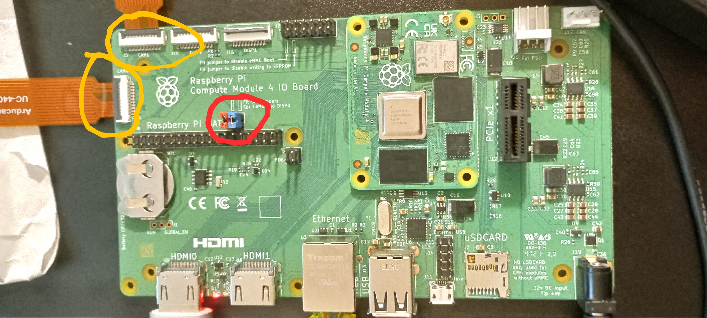

Raspberry Pi Compute Module 4 Dual Camera Setup
This guide explains how to connect and configure two cameras on the Raspberry Pi CM4 IO Board, and how to test simultaneous still captures with shell scripts.
1. Hardware Setup
Required Hardware
- Raspberry Pi Compute Module 4 (CM4)
- CM4 IO Board
- 2 × Arducam 64MP (or other libcamera-compatible CSI-2 cameras)
- 2 × CSI ribbon cables
- 2 × jumper caps
Step 1: Attach the cameras
- Plug one ribbon cable into CAM0 (near the HDMI ports).
- Plug the other into CAM1 (near the USB ports).
- Ensure the ribbon contacts face the correct orientation (usually silver contacts toward the HDMI/USB connectors).
Step 2: Add J6 jumpers
- Locate header J6 on the IO board.
- Place two jumper caps in a vertical orientation (bridging the same column).
- This connects I²C and control lines for CAM0.

Step 3: Boot the system and check I²C
Install i2c-tools if not already present:
sudo apt-get update
sudo apt-get install -y i2c-toolsList buses:
i2cdetect -lYou should see:
i2c-0→ mux channel 0i2c-10→ mux channel 1
Probe each:
sudo i2cdetect -y 0
sudo i2cdetect -y 10Each should show 0x1a (camera sensor) and 0x0c (VCM driver).
2. Firmware Configuration
Step 1: Disable auto-detect
Edit /boot/firmware/config.txt:
sudo nano /boot/firmware/config.txtAdd at the end:
camera_auto_detect=0
dtoverlay=arducam-64mp,cam0 # enables CAM0
dtoverlay=arducam-64mp # enables CAM1Save and reboot
sudo rebootStep 2: Verify cameras
After reboot
rpicam-hello --listExpected output: two cameras listed
3. Test Cameras
Test Single Camera
Try a preview:
rpicam-hello --camera 0 -t 2000
rpicam-hello --camera 1 -t 2000Capture stills
rpicam-still --camera 0 -o cam0.jpg
rpicam-still --camera 1 -o cam1.jpgTest Dual Camera Capture
This script tries both cameras at once. If high resolution fails, it falls back to lower resolutions.
Save as dual_snap.sh:
#!/usr/bin/env bash
set -euo pipefail
OUTDIR="${1:-captures}"
mkdir -p "$OUTDIR"
SIZES=("4624x3472" "3840x2160" "2312x1736")
TIMEOUT_MS=1500
EXTRA_OPTS="--thumb none --buffer-count 2"
STAMP="$(date +'%Y%m%d_%H%M%S_%3N')"
F0="$OUTDIR/${STAMP}_cam0.jpg"
F1="$OUTDIR/${STAMP}_cam1.jpg"
try_capture () {
local W="${1%x*}" H="${1#*x}"
echo "Trying $W x $H ..."
rpicam-still --camera 0 -t "$TIMEOUT_MS" -n --width "$W" --height "$H" -o "$F0" $EXTRA_OPTS &
PID0=$!
sleep 0.02
rpicam-still --camera 1 -t "$TIMEOUT_MS" -n --width "$W" --height "$H" -o "$F1" $EXTRA_OPTS &
PID1=$!
wait "$PID0" && wait "$PID1"
}
for sz in "${SIZES[@]}"; do
if try_capture "$sz"; then
echo "Success at $sz"
echo "Saved:"
echo " $F0"
echo " $F1"
exit 0
fi
doneUsage:
chmod +x dual_snap.sh
./dual_snap.shTips & Troubleshooting
- Memory errors: capturing two full-res images in parallel may fail. Stick to 3840×2160 for stability.
- Permissions: ensure your user is in the video group:
sudo usermod -aG video $USER- Color/exposure match: use fixed settings:
EXTRA_OPTS="--shutter 10000 --gain 1.5 --awbgains 2.0,1.5"- Truly simultaneous capture: requires external trigger/sync hardware. Software methods give ms-level offsets.